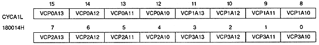
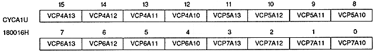

VCP0A00 to VCP0A03 | 180010H | bits 12-15 | VRAM-A0 (or VRAM-A) timing T0 |
VCP1A00 to VCP1A03 | 180010H | bit 8 ~ 11 | For VRAM-A0 (or VRAM-A) timing T1 |
VCP2A00 to VCP2A03 | 180010H | bit 4 ~ 7 | For VRAM-A0 (or VRAM-A) timing T2 |
VCP3A00 to VCP3A03 | 180010H | bit 0 ~ 3 | For VRAM-A0 (or VRAM-A) timing T3 |
VCP4A00 to VCP4A03 | 180012H | bit 12 ~ 15 | VRAM-A0 (or VRAM-A) timing T4 |
VCP5A00 to VCP5A03 | 180012H | bit 8 ~ 11 | For VRAM-A0 (or VRAM-A) timing T5 |
VCP6A00 to VCP6A03 | 180012H | bit 4 ~ 7 | For VRAM-A0 (or VRAM-A) timing T6 |
VCP7A00 to VCP7A03 | 180012H | bit 0 ~ 3 | VRAM-A0 (or VRAM-A) timing T7 |


VRAM cycle pattern bit (for VRAM-A1) : VRAM cycle pattern bit
VCP0A10 to VCP0A13 | 180014H | bits 12-15 | For VRAM-A1 timing T0 |
VCP1A10 to VCP1A13 | 180014H | bit 8 ~ 11 | VRAM-A1 timing T1 |
VCP2A10 to VCP2A13 | 180014H | bit 4 ~ 7 | VRAM-A1 timing T2 |
VCP3A10 to VCP3A13 | 180014H | bit 0 ~ 3 | VRAM-A1 timing T3 |
VCP4A10 to VCP4A13 | 180016H | bit 12 ~ 15 | VRAM-A1 timing T4 |
VCP5A10 to VCP5A13 | 180016H | bit 8 ~ 11 | VRAM-A1 timing T5 |
VCP6A10 to VCP6A13 | 180016H | bit 4 ~ 7 | VRAM-A1 timing T6 |
VCP7A10 to VCP7A13 | 180016H | bit 0 ~ 3 | VRAM-A1 timing T7 |